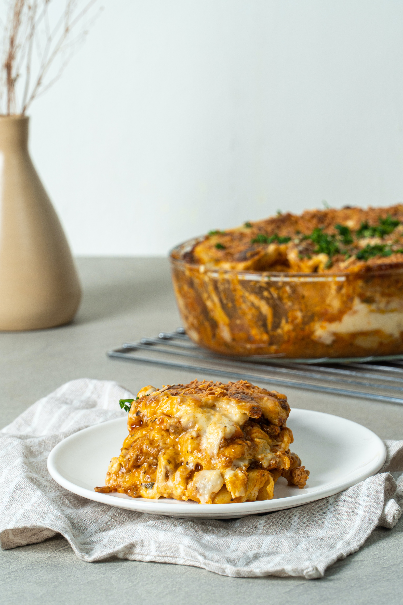

Lasagna

Description
Traditional, full-flavored lasagna is layered together in just minutes with pasta sauce, noodles, and three
cheeses.
Ingredients
- 1 (26 ounce) jar Prego® Traditional Italian Sauce
- 6 each uncooked lasagna noodles
- 1 (15 ounce) container ricotta cheese
- 2 cups shredded mozzarella cheese
- ¼ cup grated Parmesan cheese
Steps
- Buy red sauce, white sauce & pasta sheets
- Put a layer of pasta sheet in a pyrex
- Layer the red sauce and then the white sauce in the pyrex
- Repeat at least 3 times
- Bake for 40 mins at 180C
- Enjoy!
All recipes